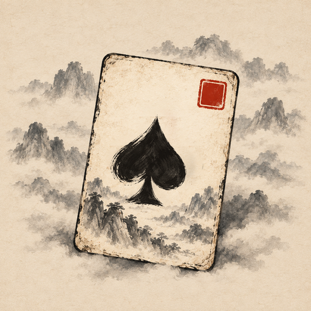

《墨局》（Ink Gambit，原名《牌宗》）支持 iPhone、iPad 与 Mac。各平台是否可下载，以App Store实际供应为准。
请发邮件至 telegram2ai@gmail.com。请说明设备型号、系统版本、游戏版本、问题发生的位置及操作步骤。请勿发送密码、付款卡号或验证码。
检查设备系统音量；iPhone还需检查静音模式，然后打开游戏顶部音符按钮。音乐和音效分别有开关与音量。耳机断开或音频被中断后，可能需要在声音面板点击继续播放。
画名、印谱、成就和进行中的一局保存在本机。游戏不提供账号、自动云同步，也不提供存档导出或导入；系统备份可能包含这些文件，请在删除游戏或换机前自行确认备份。
可调整窗口大小，用鼠标点选手牌。菜单栏里的“对局”菜单列出出牌、提示、过牌、清空的键盘快捷键；切换到其他应用后音乐会按声音设置暂停或继续。
游戏内支持18种语言及跟随系统。免费下载：第一天不限局数，之后每天免费 2 局；一次性购买“解锁完整版”后不限局数，iPhone、iPad、Mac 通用。实际价格和销售地区以App Store页面为准。购买、账单与退款由Apple处理，可访问 Apple购买支持。
Ink Gambit (formerly PaiZong) is available for iPhone, iPad and Mac. Check the App Store for current platform availability.
Email telegram2ai@gmail.com with your device model, operating system and game versions, and steps to reproduce the issue. Do not send passwords, payment card numbers or verification codes.
Play in landscape. Tap Start, choose a mode (Main Scroll, Endless Scroll, Daily Painting, Weekly Theme or Copy Study), a difficulty and a painter, then follow the scroll map into each painting; the tutorial walks you through your first run. Select cards to form a valid hand and tap Play to beat the Keeper's last hand; Hint picks a legal hand for you and Pass skips your turn. A hand scores Power × Ink; reach the painting's target first to finish it. After each painting, spend ingots in the Art Shop on seals and copybooks to grow stronger, then continue.
Check your device volume and, on iPhone, the silent switch, then open the music-note button in the game. Music and effects have separate controls. After disconnecting headphones or an audio interruption, use Resume in the sound panel if playback remains paused.
Resize the window to suit your display and click to select cards. The Game menu lists the keyboard shortcuts for Play, Hint, Pass and Clear. Background audio follows your sound settings.
Your painter name, seal album, achievements and the current run are saved locally. There is no account, automatic cloud sync, or save export or import; system backups may include these files, so check your backup before deleting the app or changing devices. The app supports 18 languages plus the system preference. The app is free to download: unlimited runs on the first day, then 2 free runs a day. A one-time “Unlock Full Game” in-app purchase removes the limit on iPhone, iPad and Mac. The App Store shows the applicable price and availability. Apple handles payments and refunds at Apple purchase support.